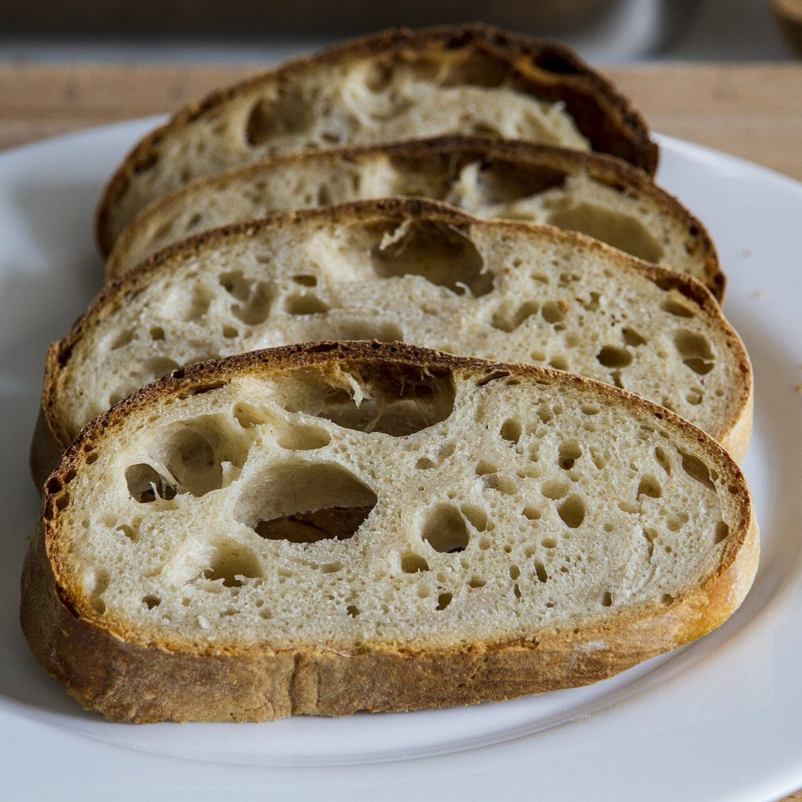

メニュー
品書き
メニューと価格は準備中です。確認でき次第、こちらに掲載します。
| メニュー | 準備中 |
|---|---|
| 価格 | 準備中 |
| ご予約 | 準備中 |
下の写真は、ベーカリーという業種から連想した雰囲気を伝えるためのフリー素材で、お店で提供しているものではありません。提供メニューを示すものでもありません。
1等撮影地不明のイメージ

2等
国外のイメージ(ブラジル)
3等
撮影地不明のイメージ
4等
撮影地不明のイメージ
「1等・2等…」は星の明るさの区分にならった、デザイン上の飾りです。品の人気や順位を表すものではありません。